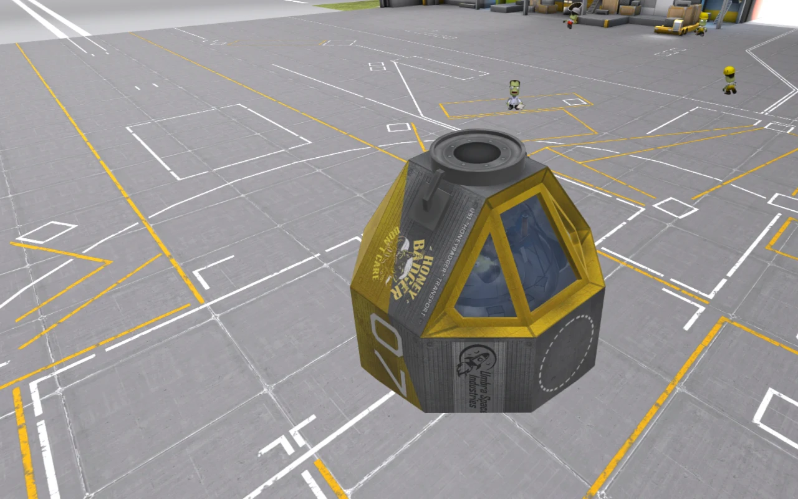
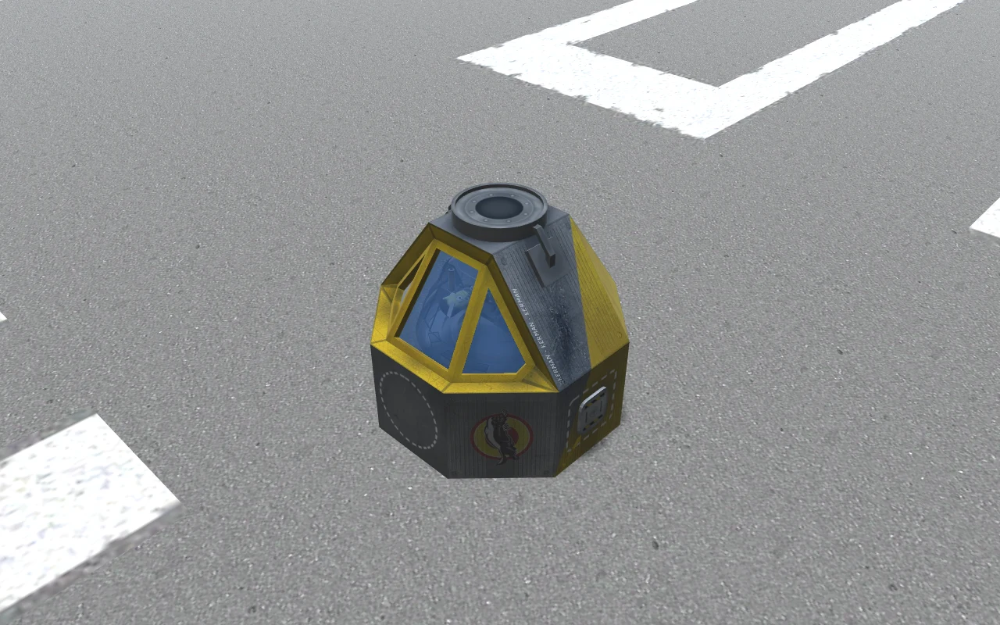
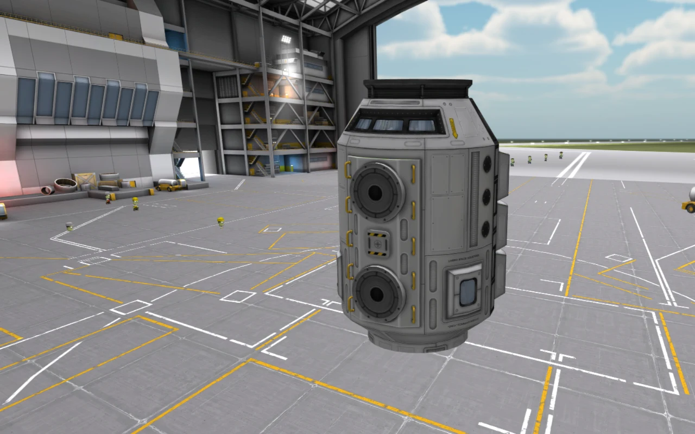
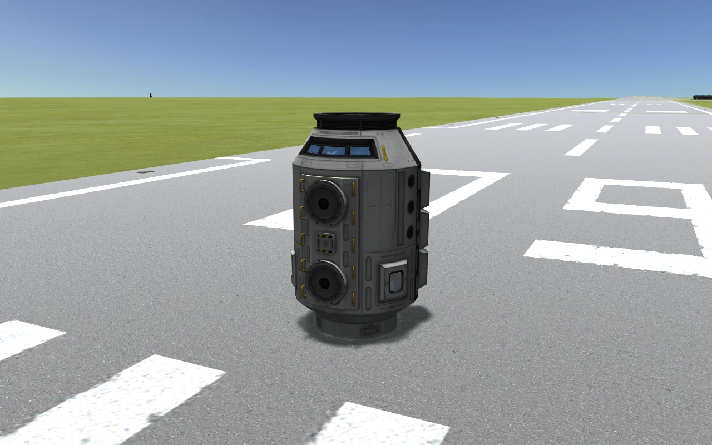

ShineFix
Catalog
Gallery
Evidence
← Back to supported mods
USI Freight Transport Technologies
Optics verified
Human tested
Version v112.0.1
Compatibility evidence
Original screenshot gallery
Parts
'Honeybadger' Command Pod


'Orca' Command Module

